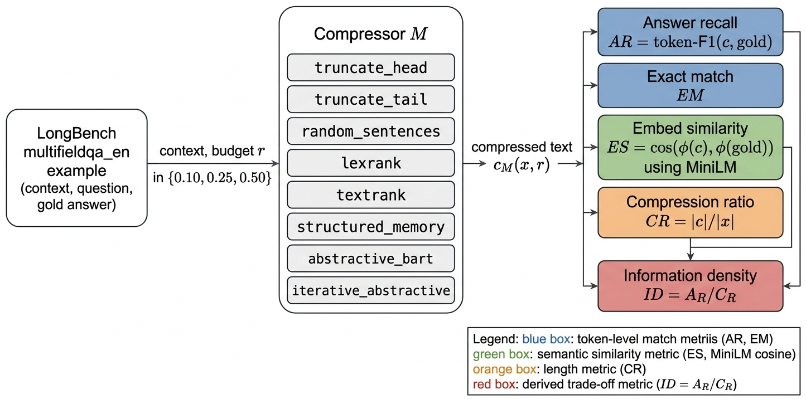
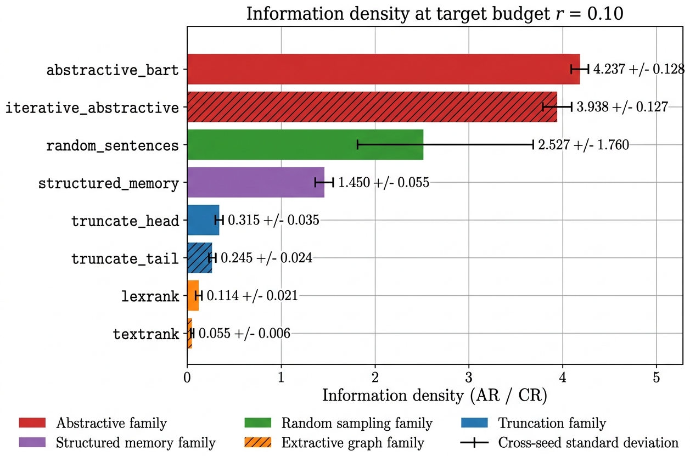
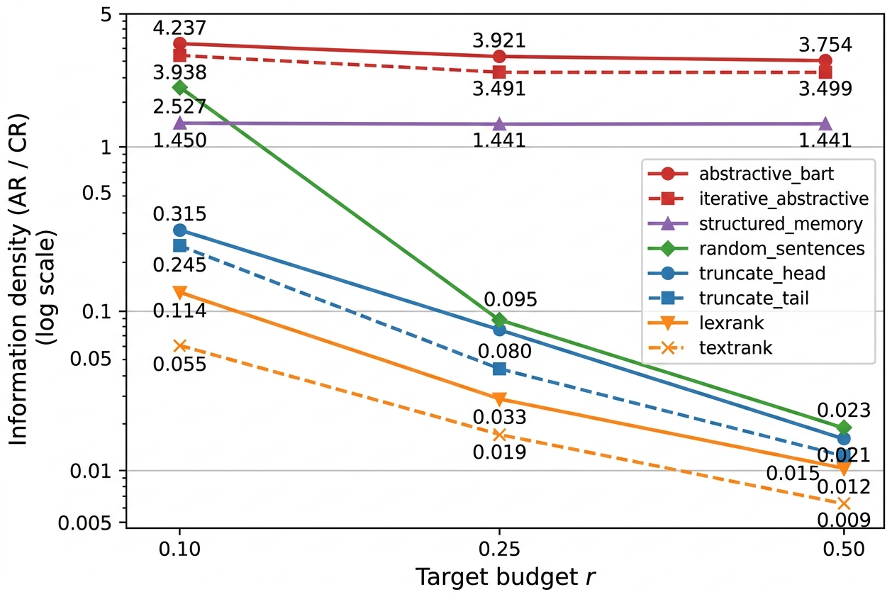

Taxonomy of compressors
Eight compressors across five families (truncation, random sampling, extractive graph, structured memory, neural abstractive) share a single evaluation grid.
long-context LLMs · prompt compression · evaluation protocol
We compare eight context compressors across five families on LongBench multifieldqa_en under three fixed token budgets, scoring each on reader-independent signals so compressor quality is not confounded with reader strength.
Context compression replaces a long source passage with a shorter surrogate that downstream readers can still use, but existing studies typically report downstream QA accuracy under a frozen large reader and omit cheap classical baselines, obscuring how much of the reported gain is specific to learned abstractive models. We evaluate eight compressors spanning five families (truncation, random sampling, extractive graph, structured memory, neural abstractive) on LongBench multifieldqa_en under three fixed target budgets r \{0.10, 0.25, 0.50\} and report four reader-independent signals: token F1 answer recall, exact match, MiniLM embedding similarity, and realised compression ratio, along with a derived information density ID = AR / CR. Single-pass distilBART attains ID = 4.24 at r = 0.10, roughly an order of magnitude above any non-abstractive family, and stays between 3.75 and 4.24 across budgets. Iterative compaction reliably loses 7% to 11% of single-pass information density, consistent with compounded per-pass information loss. Extractive graph summarisers overshoot the target ratio by up to 2.8 at the tightest budget because they commit to whole sentences; a regex-based structured memory schema compresses to an almost constant CR 0.045 regardless of budget and is self-limiting, a property we argue is desirable for systems with hard memory caps. Across three seeds and 25 examples per seed, the aggregate ID_{mean_across_methods} = 1.28 0.31; relative orderings are stable across seeds.
Eight compressors across five families (truncation, random sampling, extractive graph, structured memory, neural abstractive) share a single evaluation grid.
Every compressor is scored on answer recall, exact match, embedding similarity, and realised compression ratio, then summarised with information density ID = AR / CR.
Iterative two-pass compaction loses 7% to 11% of single-pass information density at every budget, consistent with compounded per-pass information loss.
A regex-based fact extractor (years, numerics, proper nouns, quoted strings) saturates at the document's entity capacity, holding information density flat across all requested budgets.
Every (example, compressor, budget) triple produces one compressed text, which is scored on four reader-independent signals; a derived information density metric ID = answer-recall / realised-compression-ratio summarises the trade-off.
25 examples per seed from LongBench multifieldqa_en (English multi-field QA; contexts averaging 4,000 tokens), deterministically shuffled per seed.
Each example is compressed by all eight methods at target budgets r ∈ {0.10, 0.25, 0.50}, producing 72 per-example scores per (method, budget) cell.
The compressed text is scored against the gold answer on token-F1 (AR), exact match (EM), MiniLM embedding similarity (ES), and realised compression ratio (CR); ID = AR / CR follows.
Three seeds × 8 methods × 3 budgets give 72 cells; we report per-cell mean ± cross-seed standard deviation and a single aggregate across methods.

At target budget r = 0.10, single-pass abstractive distilBART attains an information density of 4.24, the highest of any method in the evaluation. Iterative compaction reaches 3.94 at the same budget; extractive LexRank and TextRank sit at 0.11 and 0.06 respectively; positional truncation hovers at 0.32 (head) and 0.25 (tail).


Prior context-compression studies typically evaluate a single family and report downstream QA accuracy under a frozen large reader, which conflates compressor quality with reader robustness. This study puts eight compressors across five families on a single reader-independent evaluation grid and adds a regex-based structured-memory baseline that, to our knowledge, has not previously been reported on LongBench under a comparable protocol.
The target venue is ACL; the two-column typeset paper is 9.5 body pages versus the 8-page long-paper limit, so Findings of ACL is the natural fit. Alternatives include EMNLP, COLM, TMLR, and TACL.
Full typeset PDF in ACL two-column format.
02Experiment script, plan, per-seed metrics, and figure sources on GitHub.
03Run the Modal script or the same file locally on CPU in roughly the same wall-clock.
04BibTeX entry below; copy with one click.
@techreport{mishra2026information,
title = {Information Density: Comparing Context-Compression Families Under a Reader-Independent Protocol},
author = {Vikash Chandra Mishra},
year = 2026,
url = {https://github.com/Vizuara-AI-Lab/paper-information-density-compression},
}